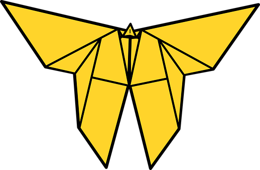

Origami Designs
About Us
Follow Us
Butterfly

Interesting Facts about Butterflies:
- Butterflies have a liquid diet
- Butterflies have four wings, not two
- Butterflies use their feet to taste
Camel

Interesting Facts about Camels:
- Camels are able to shut their nostrils during sandstorms
- Since camels have thick pads of skin on their chest and knees, they sit in hot sand without problem
- Camels can travel at up to 40 miles per hour
Chameleon

Interesting Facts about Chameleons:
- Chameleons are reptiles that are part of the iguana suborder
- Changing skin color is an important part part of communication amoung chameleons
- Most chameleons have a prehensile tail that they use to wrap around tree branches
Cicada

Interesting Facts about Cicadas:
- Cicadas are found in all continents except Antarctica
- Cicadas have one of the longest insect life spans
- Fungus can cause some cicadas to explode
Panda

Interesting Facts about Pandas:
- Like domestic cats, some pandas have vertical slits for pupils
- Most pandas spend 10-16 hours a day feeding, mainly on bamboo
- Pandas have an extended wrist bone that can be used as a thumb to help them grab food
Pigeon

Interesting Facts about Pigeons:
- Pigeons are incredibly complex and intelligent animals
- Pigeons are renowned for their outstanding navigational abilities
- Pigeons have excellent hearing abilities
Teddy Bear

Interesting Facts about Teddy Bears:
- The world's smallest stitched teddy bear is a mere 0.29 inches tall
- The oldest teddy bear in the world was made in 1904
- Teddy bears got their name from when Teddy Roosevelt refused to shoot a bear cub while hunting